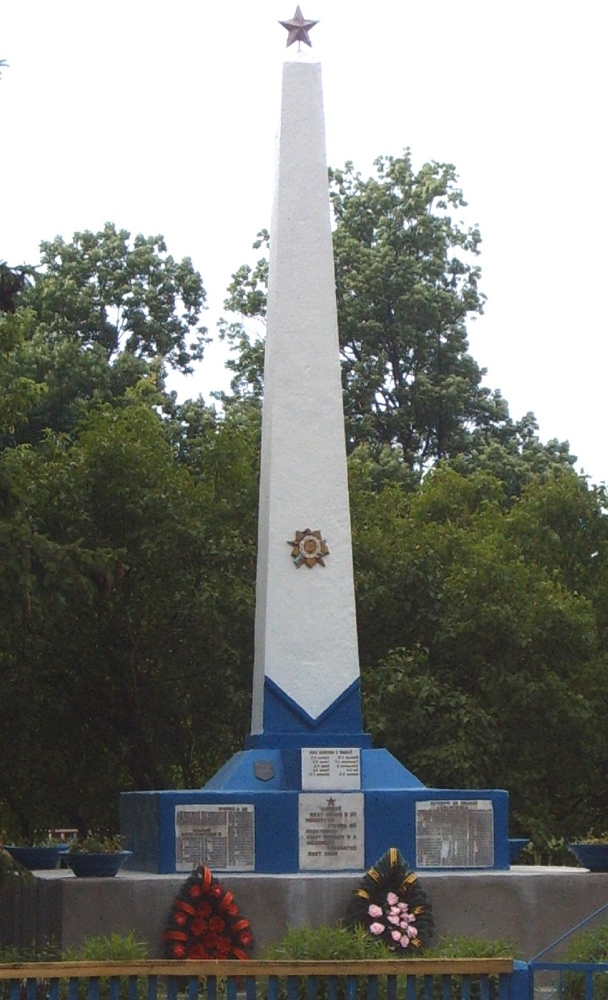

Обелиск
Обелиск установлен в 1965г. в центре деревни на могиле 32 советских воинов,
которые погибли в годы Великой Отечественной войны на территории сельсовета. В 1965г.
на могиле установлен обелиск. На мемориальных досках увековечены имена 97 жителей
деревень Колбы, Конюхи, Лопатин, Лосичи, Полхово, Хлябы, погибших на фронтах и в партизанах,
а также замученных гитлеровцами.
